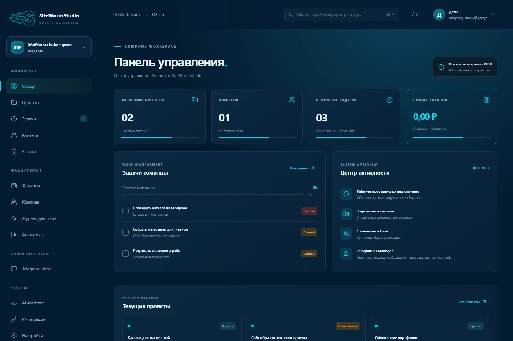
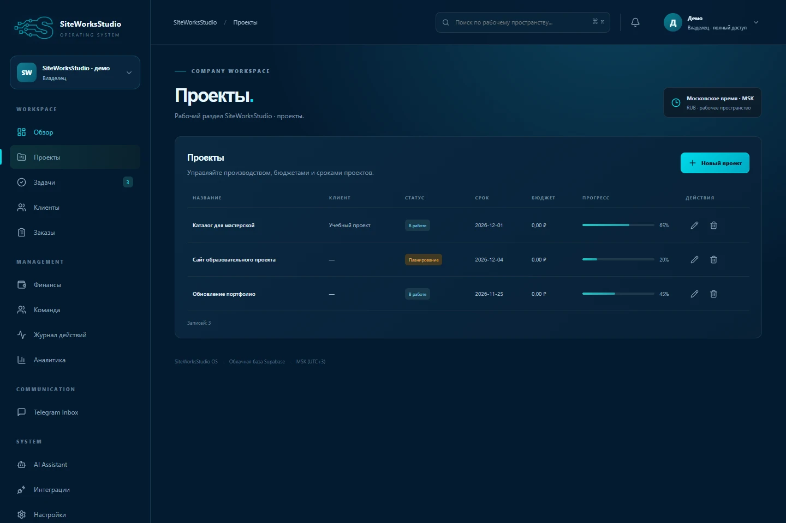

SiteWorksStudio OS
Внутренний рабочий кабинет студии для проектов, задач и заявок.
Задача
Собрать рабочие задачи и входящие обращения в одном месте, чтобы команде проще было отслеживать работу.
Как заявка попадает в работу
- Посетитель заполняет бриф на сайте студии.
- Заявка сохраняется в рабочей системе. Команда получает уведомление в Telegram.
- Сотрудник открывает кабинет под своей учётной записью и уточняет задачу.
Экраны рабочего кабинета
Скриншоты локальной сборки SiteWorksStudio OS 2.10.4. Названия проектов, задачи и показатели взяты из тестового набора.

